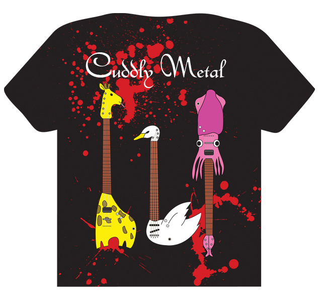
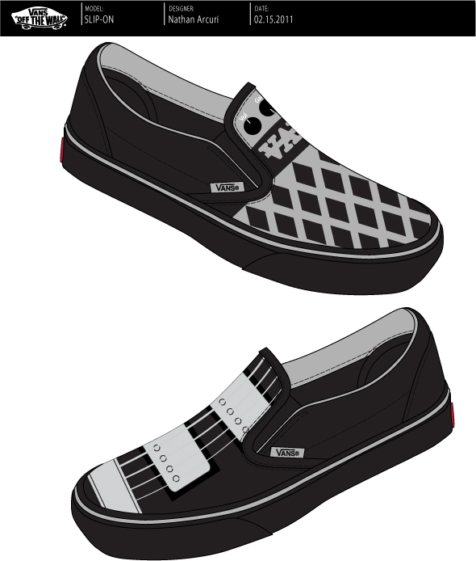
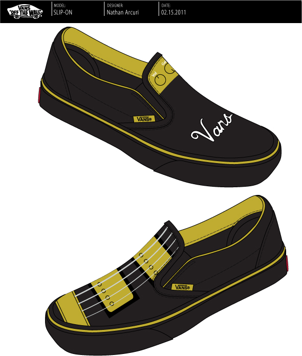
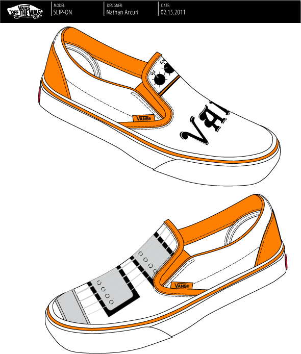
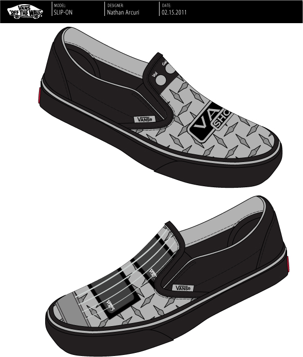
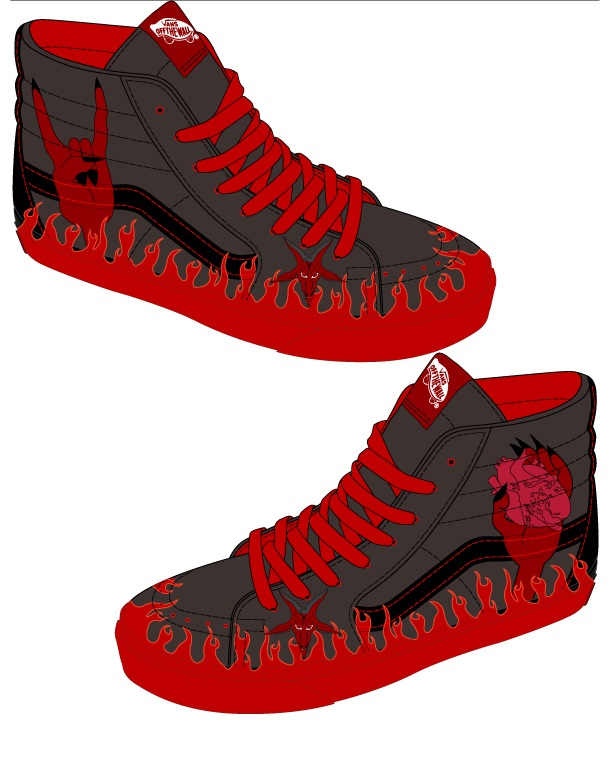
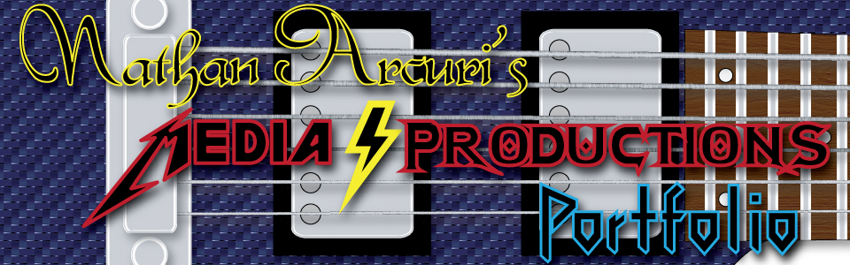

Overview
This specific learning outcome contains quite a bit of evidence.
Prepare yourself. It might get overwhelming.
This specific learning outcome contains quite a bit of evidence.
Prepare yourself. It might get overwhelming.
For this project, the students were asked to take a fable and turn it into a cartoon animation.
(It is not clear, but you must click on the mask in the moon.)
This is the video that made me realize my natural talent at computer based design. For a 10th grader, this video is pretty good. I even finished mine early and made another one in collaboration with another student who shares my silly sense of humor.
Adobe Illustrator

Adobe Illustrator
I made four pairs alone. I assisted in making the one at the bottom. Most people made one pair only.





Having seen this, my father called me "Anal Retentive".

This was the end result of my first time using After Effects. I was more interested in green screen key-lighting than a coherent narrative. You'll find that the video is mostly nonsense. My teacher was upset that I included the footage I did not end up using.